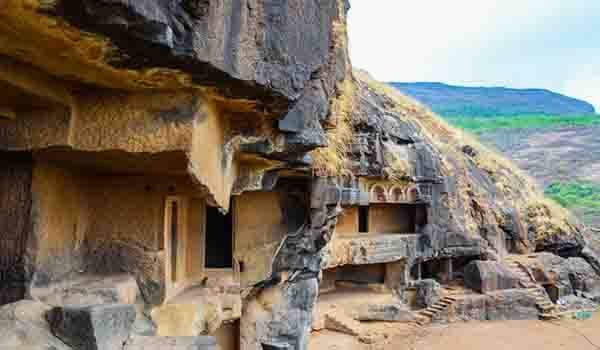

महाराष्ट्राच्या पुण्यातील लोणावळ्या जवळील भाजे लेणीमध्ये २२ गुहा रॉक-कटची (खडकात कोरलेली ) आहेत. या लेण्या भाजे गावापासून सुमारे ४०० फूट उंचीवर आहेत. हे अरबी समुद्रापासून डेक्कन पर्यंतच्या महत्त्वपूर्ण व्यापार मार्गावर आहे. या लेण्यांमध्ये स्तूप आहेत, जे त्यांचे महत्त्वपूर्ण वैशिष्ट्य आहे. लेण्यांमध्ये चैत्यग्रह आणि विहार यांचा समावेश आहे.
चैत्यगृह आश्चर्यकारक आणि भव्य लाकडी वास्तुकलाचा अभिमान आहे. त्यात बुद्धाच्या काही स्तुत्य प्रतिमा देखील आहेत. या लेण्यांच्या विहारात स्तंभयुक्त व्हरांडा आहेत, ज्यास सर्व आरामात सुशोभित केलेले आहे.
या लेण्या त्यांच्या विस्मयकारक लाकडी वास्तुकलासाठी लोकप्रिय आहेत. या लेण्यांवर आकर्षक कोरीव कामं आहेत. या लेण्यांचे आर्किटेक्चरल डिझाईन कार्ला लेण्यांप्रमाणेच आहे. या लेण्यांच्या शिल्पात विस्तृत हार, लाल पोशाख आणि दागदागिने आहेत.